Ferramentas
Ferramentas iram ser util para fazer suas coisas.Você pode carregá-las com você em seu inventário
para serem usadas, ou você pode deixar nos baús quando não for utilizar-las.Você pode melhorar
suas ferramentas no Ferreiro pagando moedas e barras de matal.Essa melhoria leva dois dias para
ser completo.Enquanto a ferramenta estiver no Ferreiro, você não podera comprar itens e nem pedir
para Clint(Ferreiro) abrir os geodos.Existe uma ordem de materias que as ferramentas podem ser
melhoradas, exemplo: as ferramentas de cobre so podem ser melhoradas para uma ferramenta de aço.
Enxadas
Usadas para arar e cavar o solo.As enxadas podem ser usadas também para escavar locais onde se
encontram artefatos, que estão espalhados no mapa, assim revelando itens secretos.
| imagem | Nome | Custo | ingredientes |
|---|---|---|---|
| Enxada | Não tem | ||
| Enxada de Cobre | 2,000 ouros | 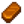 barra de cobre(5) | |
| Enxada de Aço | 5,000 ouros | 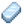 barra de aço(5) | |
| 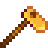 | Enxada de Ouro | 10,000 ouros | 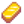 barra de ouro(5) |
| 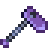 | Enxada de Iridio | 25,000 ouros | 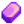 barra de Iridio(5) |
Picaretas
Usadas geralmente para quebrar pedras e itens de mobilia.
Ao melhorar o número de acertos necessarios para quebrar
algo diminui e grandes pedras se tornam quebraveis.
| imagem | Nome | Custo | ingredientes |
|---|---|---|---|
| 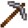 | Picareta | Não tem | |
| 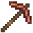 | Picareta de Cobre | 2,000 ouros | barra de cobre(5) |
| 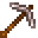 | Picareta de Aço | 5,000 ouros | barra de aço(5) |
| 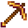 | Picareta de Ouro | 10,000 ouros | barra de ouro(5) |
| 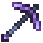 | Picareta de Iridio | 25,000 ouros | barra de Iridio(5) |